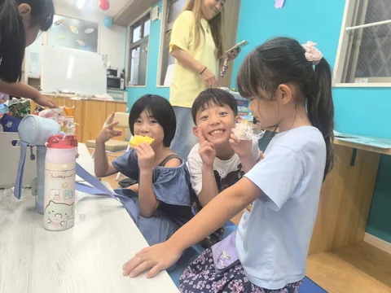
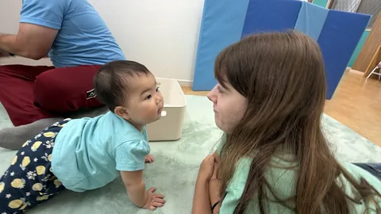

「英語って楽しい！」
その一歩を、ルアナで。
遊んで、つくって、話して。
お子さまの年齢に合ったクラスで、
はじめての英語を楽しみませんか。

お子さまにぴったりのクラスは？
年齢から選ぶと、時間や料金、体験のご案内を確認できます。
Kinder School｜年少〜年長
歌・工作・テーマ学習で、英語を使う楽しさを育てます。
月〜金｜年少・年中 15:00〜16:00／年中・年長 15:00〜17:00
After School｜小学生
学校のあとに、英語で学び、遊び、友だちと過ごす時間。
月〜金｜14:00〜18:00・対象エリアのお迎えはご相談ください

英語を学ぶ時間が、
楽しみになるように。
一人ひとりのペースを大切に少人数のクラスで、初めてのお子さまにも寄り添います。
使いながら、自然に親しむ歌や工作、ゲームなどの活動を英語で楽しみます。
放課後の通いやすさも小学生のお迎えは、対象エリアをご相談いただけます。
はじめての一歩を支える先生たち
ネイティブ講師
日々の遊びや会話の中で、自然な英語のやりとりを楽しみます。
経験豊富な保育士
お子さま一人ひとりに寄り添い、安心して過ごせる時間を大切にします。
無料体験までの、かんたん3ステップ
クラスを選んで申し込み
お子さまの年齢に合う体験フォームからご予約ください。
スクールから日程をご案内
気になることは、事前にLINEでもご相談いただけます。
ルアナのレッスンを体験
教室の雰囲気や、お子さまの様子を確かめてください。
体験前の、ちょっと気になること
英語がはじめてでも参加できますか？
はい、初心者のお子さまも歓迎しています。一人ひとりのペースに合わせ、歌や遊び、アクティビティを通して自然に英語へ親しめるようサポートします。
何歳から通えますか？
0〜3歳のお子さまと保護者の方向けのPeekaboo親子英語クラス、1〜2歳児向けのプリスクール、3〜6歳（幼稚園の年少・年中・年長）向けのキンダースクール、小学生向けのアフタースクールをご用意しています。
体験レッスンはどこから申し込めますか？
このページの「無料体験を予約する」から、年齢に合うクラスを選んでお申し込みいただけます。
小学生のお迎えサービスはありますか？
中河原付近の小学校、および府中駅から多摩市・聖蹟桜ヶ丘駅の間でお迎えに対応しています。対象エリアや時間については事前にご相談ください。
まずは一度、遊びに来ませんか。
お子さまに合うクラスで、英語の楽しさを体験。
フォーム送信後、スクールから日程をご案内します。
クラス選びに迷ったら、LINEで相談府中・中河原で、お待ちしています。
東京都府中市住吉町1-24-19 1F
府中市・中河原、多摩市・聖蹟桜ヶ丘駅周辺から。小学生のお迎えは対象エリアをご相談ください。
Google マップで場所を見る ↗